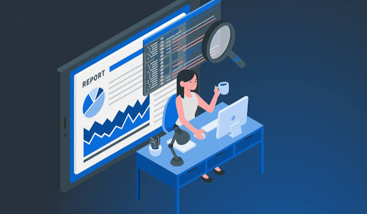

Definimos el alcance
Acordamos qué sistemas se revisan y qué queda fuera.
1-2 díasUn proceso corto y sin sorpresas. Haz clic en cada etapa para ver el detalle técnico.
Acordamos qué sistemas se revisan y qué queda fuera.
1-2 díasBuscamos fallas con herramientas y revisión manual.
5-10 días
Cada hallazgo con su gravedad y su solución.
2-3 díasVerificamos que lo arreglado quede bien cerrado.
2-4 díasEjemplos anonimizados. Elige una severidad para ver cómo documentamos cada caso.
Resolvemos las dudas habituales de nuestros clientes antes, durante y después de las auditorías.
El tiempo total depende de la amplitud del alcance acordado en la Fase 1. Por lo general, un proyecto estándar toma entre 1 y 3 semanas desde la definición inicial hasta la entrega del informe y soporte.
No. En la primera fase establecemos de manera estricta las ventanas de tiempo y las reglas de compromiso. Operamos con total control técnico para salvaguardar la continuidad operativa de tus servicios.
Entregamos un reporte dual: un resumen ejecutivo orientado a la gerencia con métricas de riesgo (CVSS) y un informe técnico detallado dirigido a los desarrolladores o administradores con los pasos exactos y código de remediación.
Incluye una sesión de asesoría técnica para resolver dudas con tu equipo de sistemas durante la corrección, además de un re-test o re-evaluación para verificar que las brechas hayan quedado completamente cerradas.
Metodologías alineadas con OWASP, NIST y PTES para pruebas rigurosas.
Ventanas de tiempo y controles estrictos para proteger tu producción.
Toda la información de tu empresa queda protegida por contrato desde el primer día.
Verificamos tus correcciones sin costo adicional dentro del plazo acordado.
Tres pasos simples previos para garantizar una auditoría rápida y sin contratiempos.
Firma de la carta de autorización y el acuerdo de confidencialidad (NDA).
Listado exacto de IPs, dominios o aplicaciones web que formarán parte de la evaluación.
Designar un responsable de sistemas o desarrollo para la coordinación de ventanas.
Nuestros resultados y constancias pueden usarse como evidencia en tus auditorías y certificaciones.
Agenda una llamada de alcance de 15 minutos y te decimos qué conviene evaluar primero. Sin compromiso.
Mantén la calma. Contáctanos ahora y te guiamos.